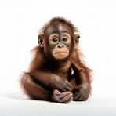

ranbir is good guy
monkey is goooood

The unicorn is a legendary animal that looks like a horse or a goat with a single horn on its forehead. Unicorns are thought to be good and pure creatures with magical powers. They are strong, often white in color, and difficult to catch. The unicorn appears in the art of ancient Mesopotamia.